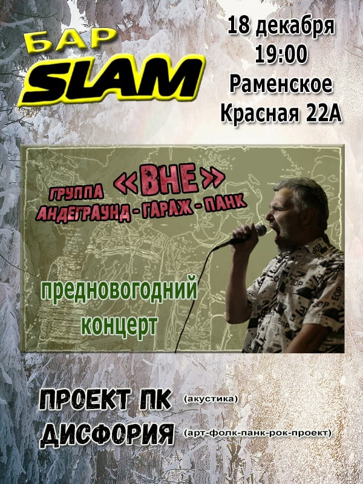

Ближайшие концерты и события
Прошедшие концерты и события
С ДнюХОЙ! Осенний рок-концерт в Бульдог Баре
Грандиозное событие произойдет этой осенью 25 сентября в 19:00 в самом уютном, душевном и очень нами любимом заведении города Москвы - Бульдог Баре!
- КАРАМАЗОВ ДРАМС
- ДИСФОРИЯ
- ОТРЯД ДЖОНА В ОКРУЖЕНИИ!
- АКУЛИЙ ЖЫР
- АЛЕКСЕЙ НЕКРАСОВ
- ДЖОННИ ХЛЕБ
- ДЕЗДЕМОН СИДОРОВ И НАДЕЖДА
Отмечаем днюху концептуального поэта Джонни Хлеба, а так же празднуем день рождения замечательного фронтмена не менее прекрасной и забойной панк-группы "Карамазов Драмс" Алексея "Волоса", а так же в сентябре успел родится анархо-бард-рокер Дездемон Сидоров.
Вобщем друзья-товарищи, нельзя категорически пропускать сие мероприятие, никак знаете, нельзя.Тем более как играют и поют сами именинники, так и их старые, проверенные друзья, что поздравят собравшихся песнями и стихами. Алексей Некрасов, Арт-фолк-панк-рок-проект "Дисфория" и группа из Солнечного Подольска "Акулий Жыр", а так же панк-группа "Отряд Джона в Окружении!"
ВХОД СВОБОДНЫЙ! (ПОДАРКИ ИМЕНИННИКАМ И ДОНЕЙШН ПРИВЕТСТВУЮТСЯ!) ВСЕХ ЖДЕМ!
25 сентября в 20:00 — 26 сентября в
0:00
Клуб Бульдог бар
Москва г., Затонная ул., д 11 к 2А, Москва
Встреча ВК
Зимний рок в Баре Бульдог
В этот вечер в замечательном "Бульдог Баре" мы встретимся с вами, друзья, чтобы вспомнить, что хорошего и не очень случилось в этом году, но грустить не будем. Ибо только оптимизм спасет мир! Для Вас играют и поют:
- Алексей Некрасов (бард-рок)
- Дисфория (Арт-фолк-панк-рок-проект)
- Акулий Жыр (Новый Авангард)
- Дездемон Сидоров и Надежда (Анархо-бард-рок)
ВХОД СВОБОДНЫЙ! (ДОНЕЙШН)
19 декабря в 18:00
Москва г., Затонная ул., д 11 к 2А, Москва
Встреча ВК
Группа "ВНЕ" - предновогодний концерт

Выступают:
- Группа "ВНЕ" - андерграунд-гараж-панк
- Проект ПК - акустика
- "Дисфория" - арт-фолк-панк-рок-проект
- Алексей Кудрявый - акустика
ВХОД СВОБОДНЫЙ! (шляпа!!!)
18 сентября в 19:00
Раменское МО, ул. Красная, 22А
10 лет без Коди, или Крик недоступных времен...
Вечер памяти поэта Ольги "Коди" Горпенко (1968-2010) состоится
- Дисфория
- Королева И
- Чистые носители
- Максим и Марина Леви
- Алексей Кудрявый
- Лунный заяц и сородичи
- Елена Волкова
- и другие
Вход свободный (шляпа!!!)
25 августа в 18:30
Клуб Археология
Адрес: Новорязанская улица, 29 с3, Москва
Встреча ВК